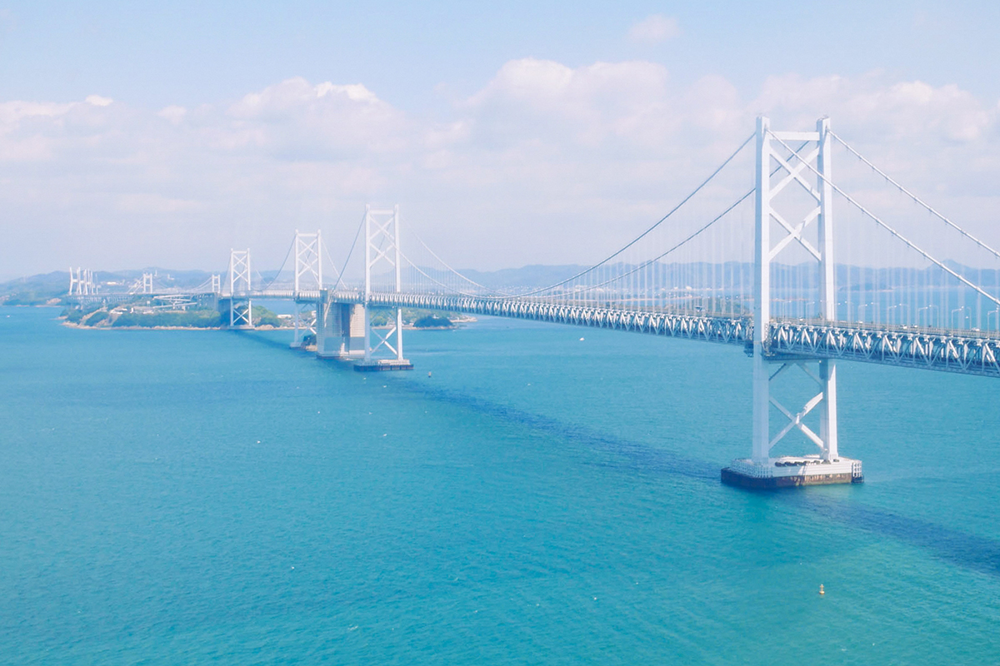

Префектура Кагава · мост Сэто-Охаси · Дорога через пролив
Мост Сэто-Охаси: девять километров над морем

Сэто-Охаси состоит из шести мостов между Хонсю и Сикоку, совмещенная автомобильная и железная дорога, одна из крупнейших в мире. Длина морского участка 9,4 километра, и дорога проходит по самому центру Сэтоути, которое называют «драгоценностью мира».
Дорога
Шесть мостов и 9,4 километра
Комплекс состоит из шести мостов, а дорога по нему открыта круглый год и работает круглосуточно. Со стороны Кагавы удобнее всего заезжать с развязки Сакаидэ-кита шоссе Сэто-Тюо: от съезда до моста около семи минут. Со стороны Хонсю дорога начинается в Окаяме.
Лучшее время для поездки: весна, лето и осень; летом море особенно яркое, осенью воздух прозрачный. Маршрут простой: смотровые площадки есть у самой дороги, а по пути стоит попробовать настоящий удон Сануки.
Мост открыли в апреле 1988 года, и с тех пор он остается главной дорогой между островом Сикоку и остальной Японией.
Окрестности
Что посмотреть рядом
Рядом с мостом со стороны Кагавы находятся мемориальный парк Сэто-Охаси, Историко-этнографический музей Сэтоути и Аквариум Сикоку. Из местной еды стоит попробовать удон Сануки и курицу на кости хонэцуки-дори.
Сэто-Охаси, шоссе Сэто-Тюо
- Оператор
- JB Honshi (Honshu-Shikoku Bridge Expressway)
- Телефон
- +81 78-291-1033
- Протяженность
- 9,4 км (морской участок)
- Часы работы
- круглосуточно, круглый год
- Цены
- легковой автомобиль, участок Кодзима–Сакаидэ-кита: 3 670 иен наличными; по ETC 1 730 иен в будни, 1 680 иен в выходные
- Как добраться
- около 7 минут от развязки Сакаидэ-кита шоссе Сэто-Тюо
- Сайт
- jb-honshi.co.jp